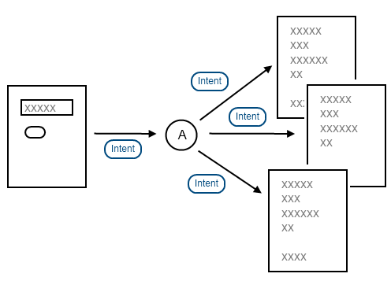

インテントの作成
インテントというのは簡単に言えばアクティビティなどが他のアクティビティやアプリケーションなどと情報のやり取りを行うための箱のようなものです。インテントという箱には、相手先や届けたい情報などが含まれています。
アクティビティから他の指定したアクティビティへインテントを送ることがあります。例えば他の画面を表示したい場合などです。
このようなインテントは明示的インテント(Explicit intents)と呼ばれます。
また送付先を決めずにインテントを送ることもあります。アクティビティなどはインテントフィルタと呼ばれる仕組みを使ってどのようなインテントを受け取るのかを設定しています。送付先が決まっていない場合は、システム側が条件に合う全てのアクティビティに対してインテントを送付します。

このようなインテントは暗黙的インテント(Implicit intents)と呼ばれます。
どちらの場合であっても、送信元から送られたインテントはandroidのシステムが受け取ってから適切な相手に対して改めて送信が行われます。
インテントはこのようにアクティビティやサービス間などで情報のやり取りを仲介するものです。
インテントの作成
インテントの元になるIntentクラスは次のように定義されています。
public class Intent extends Object implements Parcelable Cloneable
java.lang.Object Ｌ android.content.Intent
インテントを作成するにはコンストラクタを使用します。どのようなインテントをどのように送信するのかに応じていくつかのコンストラクタが用意されています。次のページ移行でいくつかのコンストラクタを実際に使用しますが、ここではコンストラクタの一覧だけを確認しておきます。
Intent() Create an empty intent. Intent(Intent o) Copy constructor. Intent(String action) Create an intent with a given action. Intent(String action, Uri uri) Create an intent with a given action and for a given data url. Intent(Context packageContext, Class<?> cls) Create an intent for a specific component. Intent(String action, Uri uri, Context packageContext, Class<?> cls) Create an intent for a specific component with a specified action and data.
明示的なインテントを使用する場合は5番目のコンストラクタを主に使用します。暗黙的なインテントの場合には3番や4番などを主に使用します。
テスト用プロジェクト
インテントで使用するプロジェクトをEclipseで作成しました。
| 名称 | 値 |
|---|---|
| プロジェクト名 | Intent |
| ターゲット名 | Google APIs APIレベル7 |
| アプリケーション名 | Sampleプログラム |
| パッケージ名 | jp.javadrive.intent |
| Create Activity | IntentActivity |
| Min SDK Version | 7 |
次のように作成されました。

実際の作成方法は「プロジェクトの作成と実行」を参考にして下さい。
( Written by Tatsuo Ikura )

著者 / TATSUO IKURA
初心者～中級者の方を対象としたプログラミング方法や開発環境の構築の解説を行うサイトの運営を行っています。